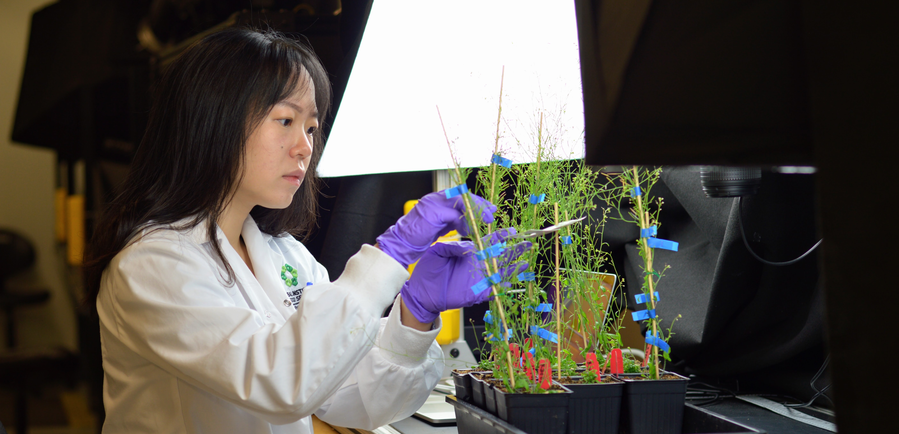

Seed imaging
This is Canola.
You might have seen yellow fields of them while driving across the prairies. A big part of my job as a research technician at the Global Institute for Food Security was to phenotype (observe and describe the physical traits or characteristics) seeds such as canola and soybean. I had to take pictures of the experiments every few hours for two straight weeks, having to be in the lab despite the weekends. When one has thousands of seeds to screen, it takes up a lot of time, and the task gets laborious.
This was a process that many plant researchers contended with, across different species.
My supervisor and I talked to our colleagues from the software department and explained our system. I had mentioned that I was trying to apply my programming skills, and our software lead thought it would be a good opportunity for me to learn from. Eventually, we decided to pursue this side project and form a team with our hardware engineer, our software developer as a mentor, another software developer who took care of the IoT components, and myself as the biologist and programmer.


A few meetings and feedback sessions later, we created a machine that automated the capture and processing of seed images, while in a controlled environment suited to the experimental conditions.

Through Pandas, Scikit-learn, and OpenCV in Python, the output was a spreadsheet of rich, visual and statistical data about the seeds and its environment that would have otherwise taken 14 hours per experimental run time. As a result, we were able to save research technician time and labour, so our technicians could focus on helping more researchers in the laboratory, or pick up a new skill in the meantime.
The script was also available as a Jupyter Notebook to help researchers understand what was going on behind the scenes, and adjust parameters based on the type of seeds and experimental setup they had.